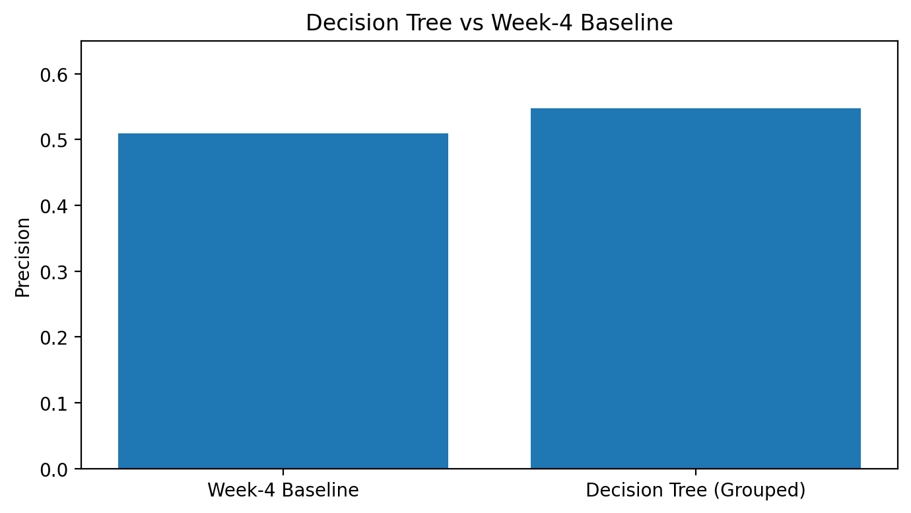
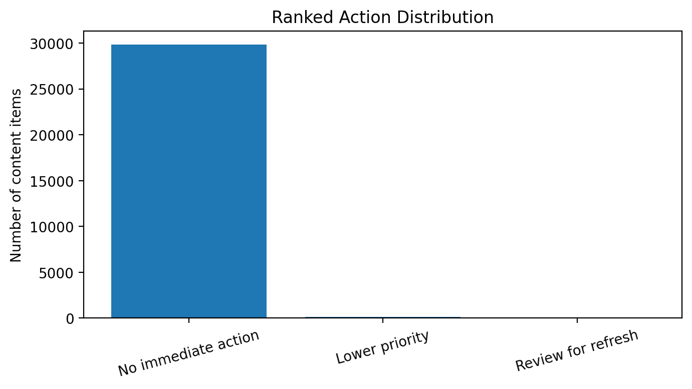

A decision-support workflow for prioritizing content pages for human review using historical freshness and search-performance signals.
Research question: Can historical content freshness and performance signals help prioritize content pages for human review?
This study evaluates whether observable content and search-performance signals can support a ranked content-review workflow. A transparent rule-based baseline was compared with an interpretable Decision Tree classifier using six content and performance features. The model was evaluated using a grouped train/test split by client, producing 23,837 training rows and 6,163 test rows with zero client overlap. Under this evaluation setup, the grouped Decision Tree achieved measured precision of 0.547 compared with 0.509 for the baseline, an improvement of approximately 0.038 precision points. The result provides directional evidence that the model may support prioritization beyond the simple baseline, but it does not establish causation or guarantee future performance improvement.
Content teams may have many pages that could potentially benefit from review or refresh attention. Reviewing every page with equal priority is inefficient, so a practical decision-support system should help identify which pages deserve attention first.
This analysis investigates whether historical content freshness and search-performance signals can be used to prioritize pages for human review.
This work uses the FlyRank ML Internship dataset. The working content-level dataset contains 30,000 records and 44 columns.
The declining outcome label and fields directly related to its construction were excluded from the model features.
is_declining_labeltrend_directiontrend_pctThese fields were excluded because they represent the outcome or information directly related to the outcome. No client names, private search queries, or private client information are included in the analysis.
The final model uses six features:
content_age_days,
days_since_last_update,
impressions_90d,
avg_position,
ctr, and
word_count.
The binary target is_declining_label was defined from
the observed trend_direction field. The label equals
1 when the observed trend direction was "down" and 0 otherwise.
It was used only as the prediction target.
The Week-4 baseline is a transparent rule-based prioritization score based on content staleness and observed visibility. Pages that had not been updated recently and still had measurable visibility received higher priority.
A Decision Tree classifier with a maximum depth of 5 was used as the Week-5 model. The method was selected because it is interpretable and can capture simple non-linear relationships between the available content signals and the declining label.
The main evaluation used a grouped split by client_id.
A GroupShuffleSplit with 20% test data and
random_state=42 produced:
This grouped design prevents the same client from appearing in both the training and test sets.
The final feature set was checked for direct outcome leakage.
No potential leakage candidates were included among the six model
features. In particular, is_declining_label,
trend_direction, and trend_pct were kept
outside the feature set.
The Decision Tree was compared with the Week-4 baseline using precision on the same grouped evaluation setup.
| Method | Precision |
|---|---|
| Week-4 Baseline | 0.509 |
| Decision Tree (Grouped) | 0.547 |

Figure 1. Decision Tree vs Week-4 Baseline precision.
The grouped validation result was lower than the earlier Week-5 estimate of 0.579 obtained before applying the grouped-by-client validation constraint. The decrease suggests that the earlier estimate was somewhat optimistic.
The grouped result is therefore treated as the more honest estimate for this analysis. The measured improvement over the baseline is directional evidence that the model may provide useful decision-support under this evaluation setup.
The action playbook uses the transparent baseline score to prioritize content for human review.
Pages that are both stale and have observed visibility receive the highest priority.
Reason code:
STALE_WITH_VISIBILITY
Pages that are stale but have lower observed visibility receive lower priority.
Reason code:
STALE_LOW_VISIBILITY
| Recommended action | Content items |
|---|---|
| No immediate action | 29,826 |
| Lower priority | 157 |
| Review for refresh | 17 |

Figure 2. Distribution of recommended actions.
The ranking is intended to help reviewers focus attention on a smaller set of pages first. Scores and reason codes are prioritization signals, not final decisions.
The analysis notebook contains the data preparation, feature definition, grouped validation, model training, baseline comparison, ranked recommendation queue, and artifact generation.
Repository: GitHub repository
Notebook: capstone.ipynb
The published artifacts are intended to allow readers to inspect the methodology, assumptions, validation design, and measured results without exposing private client information.
Built on the FlyRank ML Internship dataset.
Data source: FlyRank
This project was completed as part of the FlyRank ML Internship track and follows the public-safe analysis and decision-support framing required for the project.